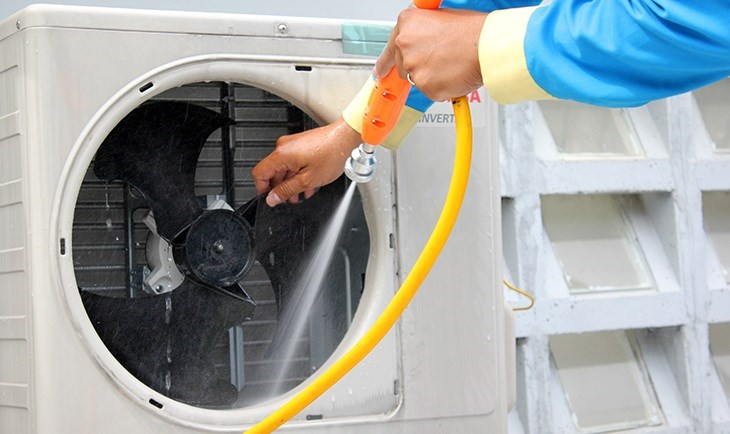

Hướng Dẫn Tự Vệ Sinh Điều Hòa Tại Nhà Cực Đơn Giản, Ai Cũng Làm Được
Việc vệ sinh lưới lọc bụi định kỳ 2 tuần/lần là cách tốt nhất để giữ máy luôn mát và tiết kiệm điện. Bạn hoàn toàn có thể tự thực hiện bước này mà không cần gọi thợ. Hãy làm theo 4 bước dưới đây.
1 Ngắt nguồn điện
Để đảm bảo an toàn tuyệt đối, hãy ngắt Aptomat hoặc rút phích cắm điều hòa ít nhất 5 phút trước khi bắt đầu.
2 Tháo và vệ sinh lưới lọc
Dùng tay nhấc lớp vỏ mặt trước của dàn lạnh lên, bạn sẽ thấy 2 tấm lưới lọc bụi. Hãy rút chúng ra và xịt rửa sạch dưới vòi nước. Lưu ý: Không dùng nước nóng hoặc bàn chải quá cứng làm rách lưới.

3 Làm sạch vỏ máy và cánh đảo gió
Dùng khăn ẩm lau sạch bụi bám trên vỏ nhựa và các cánh quạt đảo gió bên ngoài. Tuyệt đối không để nước bắn vào phần bảng mạch điện tử ở phía bên phải dàn lạnh.
4 Lắp lại và vận hành
Sau khi lưới lọc đã khô hoàn toàn, hãy lắp lại vị trí cũ và đóng nắp máy. Bật máy chạy thử ở chế độ Fan (Quạt gió) khoảng 15 phút để làm khô hơi ẩm bên trong trước khi chuyển sang chế độ Cool.